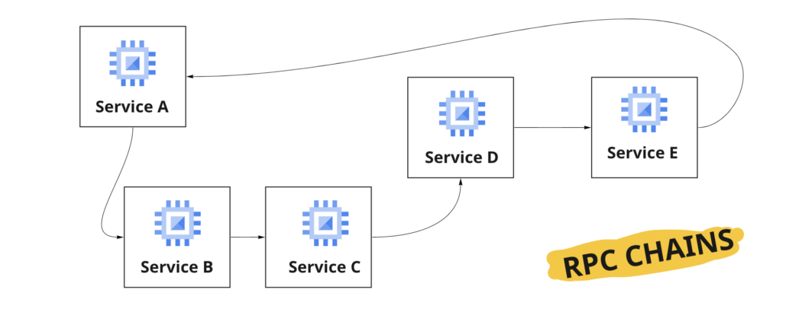
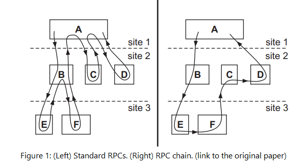
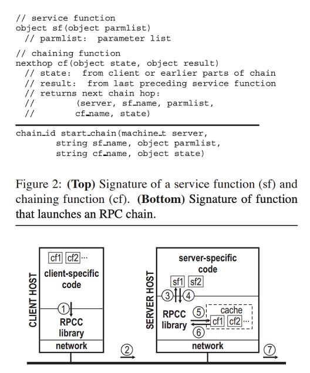

RPC调用链可以将远程过程调用变成一个有效的堆栈。
当我们编写应用程序时，我们中的许多人认为REST是服务间通信的一个通用标准。然而，还有许多其他形式的通信，RPC就是其中之一。值得注意的是，通信方式的选择取决于许多因素，如业务需求、遗留代码、技术和预算，更不用说你选择的架构模式。

在分布式计算中很受欢迎，RPC（远程过程调用）是一个程序，其中计算机程序在不同的计算机（服务器）中执行，而程序（代码）抽象出客户端和服务器之间的连接。
你们中的许多人可以在互联网上了解RPC，但我发现很难找到关于 “RPC链”的信息。我甚至不知道它的存在，直到最近，我在微软研究院读到一篇有趣的论文。
1. 引言：RPC与RPC链的关系
RPC链解决了与标准RPC有关的性能和效率问题，一个单一的任务可能涉及到对不同站点的几个客户服务器调用。如果你看下图，你可以立即注意到其中的差别。

RPC链允许客户端连续调用多个服务器（A-B-E-F-C-D-A），而无需每次都让客户端参与。
2. 主要机制
作为RPC模型中以服务函数（远程方法）形式提供的服务器服务，它们可以在一个函数链中进行逻辑排序，指定执行的下一个服务函数（可能在不同的服务器上）。正如作者所说，它们可以是C#或Java方法（存储并因此从远程存储库检索到服务），但它们不能引用非本地变量，因为它们需要独立编译。
3. 链条断裂：检测和恢复
任何服务器都可能在RPC链执行过程中崩溃。它是由一个简单的机制检测出来的，这个机制被称为链心跳，链会定期向创建它的客户端发送一个活着的消息，并带有其独特的链标识符。
如果检测到链条断裂，客户端会重新传输请求，然后，由于每个服务器的缓存结果，这个过程会从链条断裂的主机继续进行。

结语
RPC链将RPC调用组合成一条链，从而可以减少使用复杂嵌套服务调用的应用程序中的网络跳数（从而减少端到端的延迟）和带宽，因为客户端不会收到不必要的数据。关于RPC链的更多详细信息，请阅读原始论文。
参考：